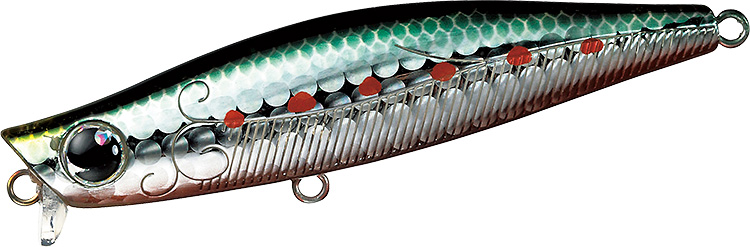
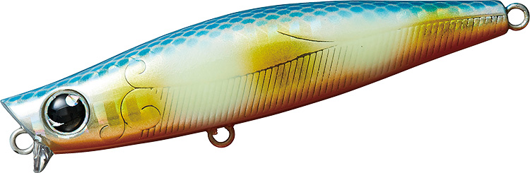
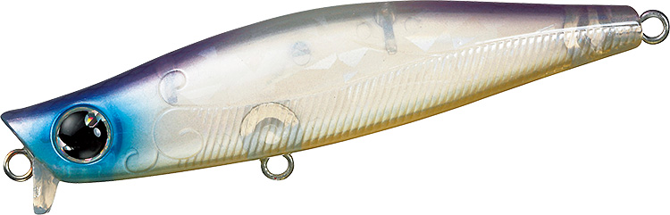

モアザン ガルバ73S
（MORETHAN GALVA 73S）
モアザン ガルバ73S（MORETHAN GALVA 73S）はDAIWA（ダイワ）のシンキングペンシルです。
“湾奥のプリンス”大野ゆうき監修の、ベイエリアや河川攻略に向けたスローピッチのコンパクトシンキングペンシル。ショートリップとファットボディで、水面直下をスローに引いてもレンジキープできるのが最大の特徴で、ガルバシリーズの基準となる73mmモデルです。

画像出典:DAIWA公式HP
スペック
- メーカー
- DAIWA（ダイワ）
- タイプ
- シンキングペンシル（リップ付き）
- 全長
- 73mm
- 自重
- 12.8g
- 有効レンジ
- 水面〜0.2m
- フック
- #8
- リング
- #2
- 飛距離
- Max61.5m／Ave59m
- アクション
- ワイドスイングアクション
- ターゲット
- シーバス
- 価格
- 1,900円（メーカー希望本体価格）
▼今すぐチェック
ガルバ73Sの特徴
水面直下から約20cmを、誰でもスローにトレースできる湾奥仕様のシンペン
-
ショートリップで素早い浮上とレンジキープを両立
数多くの試作の末に、長さと角度を突き詰めたショートリップを装備。素早い浮上性能とレンジキープ性能を両立し、ターゲットレンジの水面直下〜水面下約20cmを外しにくい。
-
パラシュート効果で風の日も上ずりにくい
リップのパラシュート効果で、風のある状況でもルアーの上ずりや横滑りを抑えられる。シンペンが苦手としがちな横風の中でも、水面直下をイージーにトレースできる。
-
ファットボディで揚力を得てスローに引ける
細身のシンペンはゆっくり巻くと沈んでしまうが、ガルバはボディを太くして揚力を得る設計。その分ウエイトを入れられるため、固定重心ながら飛距離も出る。スレさせにくいスローピッチアクションで、激戦区の湾奥ゲームに向く。
ガルバ73Sの使い方
基本はスローのただ巻き。着水後すぐに巻き始め、水面直下〜20cmのレンジをワイドスイングで引いてくる。
ロッドの角度と巻きスピードで泳ぐレンジを微調整でき、ロッドを立てればより水面寄り、寝かせれば少し下を通せる。明暗の境目や橋脚周りでは、流れに対して横切るようにコースを取り、スピードを落としてじっくり見せるのが組み立ての基本です。
ガルバ73Sの得意な状況
港湾部・運河・河川などのベイエリアで、表層付近にベイトやシーバスが浮いている状況が最大の出番。
ハク・イナッコ・小イワシなど小型ベイトのパターンや、プレッシャーが高くて強い波動のルアーに反応しない場面で強い。風があって他のシンペンが上ずってしまう日にも選びたい1本です。
ワンポイント
反応が無いときは、巻きスピードを「これ以上遅くすると沈む」ギリギリまで落としてみてください。ガルバはスローでもレンジを保ちやすいので、そのスピードで食わせられるのが強みです。
常夜灯の明暗では、明るい側から暗い側へ通すコースを意識すると、暗部に付いた魚に自然に見せられます。
ガルバシリーズのサイズの使い分け
| モデル | 全長／自重 | 得意な場面 |
|---|---|---|
| 64S | 64mm／9.7g | マイクロベイトや食い渋り時に。シリーズ最小で食わせ重視 |
| 73S | 73mm／12.8g | シリーズの基準サイズ。ベイエリア・河川のオールラウンド（本記事のモデル） |
| 87S | 87mm／19.3g | 飛距離とシルエットが欲しいときに。広い河川や大きめのベイトに |
ガルバは64S・73S・87Sの3サイズで、有効レンジはどれも水面〜0.2m。ベイトのサイズと必要な飛距離で選び分けられる。64Sの詳細はガルバ64Sの記事で紹介しています。
人気カラー
ガルバ73Sは通常カラーに加え、レーザーインパクト（LI）仕様も展開。ベイエリアのシーバス狙いでオススメのカラーを厳選して紹介します。

マルチイワシイワシ系のナチュラルカラー。澄み潮や日中、小イワシのパターンに。
 ホロレッドヘッド
ホロレッドヘッド
定番のレッドヘッド。濁りや常夜灯周りのナイトゲームでシルエットを出しやすい。

ボラグローボラ（イナッコ）を意識したグロー入りカラー。ローライトや夜のベイエリアに。

涼海クリア系の透け感があるカラー。スレた魚や澄み潮で存在感を抑えたいときに。
画像出典:DAIWA公式HP
ガルバ73Sに似ているルアー
-
 モアザン ガルバ64S
ダイワ
詳細はこちら＞
モアザン ガルバ64S
ダイワ
詳細はこちら＞
同じガルバシリーズの64mmモデル。レンジキープ力はそのままにシルエットを小さくして食わせ能力を上げたサイズで、マイクロベイトや食い渋りの場面では73Sから持ち替えたい1本。
-
 マリブ68
マングローブスタジオ
詳細はこちら＞
マリブ68
マングローブスタジオ
詳細はこちら＞
全長68mm・自重9.2gのリップ付きシンキングペンシル。同じく大野ゆうき氏のプロデュースで、リップでレンジキープするという発想がガルバ73Sと共通する。水面付近〜60cmとやや下のレンジまで探りたいときに。
-
 グラバーHi 68S
邪道
詳細はこちら＞
グラバーHi 68S
邪道
詳細はこちら＞
全長68mm・自重11gのシンキングミノー。ファストリトリーブや激流に強く、スローでは約100cmのレンジをシンペンのように泳ぐ。ガルバ73Sが届かない一段下のレンジや、流れの強い場所で使い分けたい1本。